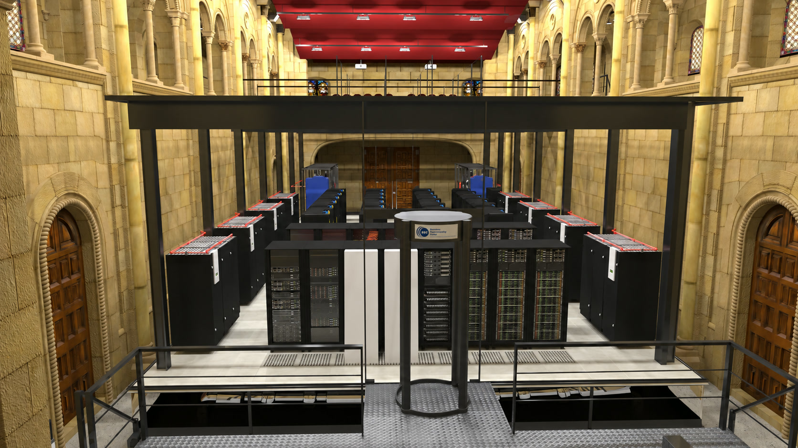

Watch film ↗SCIENTIFIC VISUALISATION · BSC · 2014
Supercomputing and eScience
A documentary for the Barcelona Supercomputing Center exploring how supercomputing advances science and everyday life. Visualisations drawn directly from simulation data reveal research into cancer, supernovas, personalised medicine, wind energy and fluid dynamics.
I created the complete 3D reconstruction of the MareNostrum supercomputer and the chapel that houses it. We then used MareNostrum to render vast scientific datasets with Arnold across thousands of processors, turning previously unseen simulation data into images.
Production recognition
- Ronda International Scientific Film Biennial 2014 — Exact Sciences, Engineering & Technology winner
- Daroca & Prisión Film Festival — Muy Interesante Award
- Academia Film Olomouc 2015 — Best Short Documentary
- Torrelavega International Short Film Festival 2015 — Best Documentary
- Science Film Festival 2014 — Official Selection